前言
潛水了很久，是時候出來還債分享一下了，在工作上跟 Cordova 真的很有緣，雖然主要是 Angular 的專案開發，但幾乎都是要打包成 APP 的方式呈現，在開發的過程中也踩了不少地雷，經歷過多少次的絕望深淵中爬出，為此，將自身的經驗紀錄下來分享給大家，若有錯誤或需補充的地方還請大家不吝指教。
什麼是 Cordova？
Apache Cordova 是一個開源的行動開發框架，它可以讓我們透過標準的 Web 技術例如：HTML, CSS3 與 JavaScript 進行跨平台的行動應用開發，應用程式可以在每個不同的平台包裝並執行，並依靠符合標準的 API 綁定來存取裝置的功能，例如傳感器，資料或網路狀態等。
有以下的情況可以使用 Cordova：
- 你的行動應用開發想要沿用現有的專案，跨到其他平台，不想再使用該平台的程式語言與工具重新開發。
- 你是網站開發者，想要將你的網站應用封裝並部署到各個應用商店平台。
- 你是原生的行動應用開發者，對混合式的原生應用存取原生裝置層級 API 的
WebView元件感興趣，或是你想開發一個可以在原生與 WebView 間運作的套件。
Cordova 架構
透過下方的架構圖可以了解 Cordova 的世界觀：
HTML Rendering Engine ( Web View )
- 是整個 Web 應用表演的舞台，除了提供一般瀏覽器都有的 HTML API 之外，同時也提供了 Cordova API，我們可以使用 JavaScript 來呼叫這些 API，實作我們想要的功能。
Web App
- 顧名思義就是主要開發 Web 的區塊，整個 App 的畫面與非原生的功能都在這開發，可以比喻成是表演者與工作人員的後台，負責撰寫腳本、準備道具的地方。預設的網頁名稱為
index.html，並引用 CSS、JavaScript、圖片或其他在執行時所需要的資源檔案。應用程式會在一個原生應用包裝的WebView中執行，這個區塊有一個很重要的檔案config.xml，他主要提供關於應用程式的資訊與特定的設定參數影響他的執行方式，例如是否針對裝置轉向做出反應。
- 顧名思義就是主要開發 Web 的區塊，整個 App 的畫面與非原生的功能都在這開發，可以比喻成是表演者與工作人員的後台，負責撰寫腳本、準備道具的地方。預設的網頁名稱為
Plugins
- Cordova 套件是整個舞台最重要的部分，他們是幕後辛苦的工作人員窗口，提供原生裝置相關的功能存取介面，這些介面背後綁定了 Cordova 原生 API，我們可以使用 JavaScript 呼叫這些套件提供的 API，實現例如相機功能、電池、網路狀態、檔案存取…等原生的功能。
- Apache Cordova 專案持續維護的套件稱為核心套件( Core Plugins )，這些核心套件提供存取了上述基本且重要的功能，此外，也有不少針對特定平台才有的功能進行開發的第三方套件可以使用，我們可以在 plugin search 或 npm 搜尋需要的 Cordova 套件。或是直接參考 Plugin Development Guide 自行開發套件。
- 在專案初始化的時候預設是沒有安裝任何套件的，即使是核心套件，這部分需要我們自行設定與安裝。

開發路線
Cordova 提供了兩種基本的工作流程 ( workflow ) 來建立行動應用，雖然都可以完成相同的工作，但不同的工作流成有著不同的優勢：
- 跨平台工作流程 ( Cross-platform (CLI) workflow )
- 若你的應用要盡可能在許多不同的 mobile OS 中執行，就使用這個工作流程吧！只需要專注在特定平台的開發，這個工作流程主要以
cordovaCLI 為中心，CLI 是一個高層的工具，它可以讓我們一次建立多個平台專案，並將底層常見的shell script功能抽象化。CLI 會將一包 Web Assets 複製到每個行動平台的子目錄中，在每次執行建置的時候為每個平台進行必要的配置調整，並產生應用程式的二進位檔案，CLI 也提供了方便的套件安裝功能，除非你需要切換成以平台為中心的工作流程，建議還是以跨平台工作流程為主。
- 若你的應用要盡可能在許多不同的 mobile OS 中執行，就使用這個工作流程吧！只需要專注在特定平台的開發，這個工作流程主要以
- 平台為中心工作流程 ( Platform-centered workflow )
- 若想專注於為單一平台構建應用程式並需要針對底層進行調整，請使用此工作流程。舉例來說，如同 Embedding WebViews 的說明，你需要將一個原生元件混合到以 Web 為基礎的 Cordova 元件中，根據經驗，如果需要修改SDK 中的專案，那個使用此工作流程較為適合。
筆者在開發的時候，都是以跨平台工作流程為主，因此接下來的介紹都會以跨平台工作流程的開發經驗分享為主。
環境準備
安裝 Node.js
可以到 node.js 官網下載安裝檔進行安裝。
安裝 Cordova-CLI
在開發過程中，cordova-cli 扮演著很重要的角色，它提供了平台管理、套件管理、建置與執行的功能，安裝方式如下：
使用 npm 安裝：
1 | npm install -g cordova |
使用 yarn 安裝：
1 | yarn global add cordova |
目前常見的 App 開發主要支援的平台有 Android、iOS 與 Windows Phone，其中前兩者為主要的市場平台，筆者目前遇到需要支援的平台也以 iOS 與 Android 為主，因此就針對這兩個平台來分享經驗囉。
Android 環境準備
JDK ( Java Development Kit )
Java JDK 可直接到官網下載。
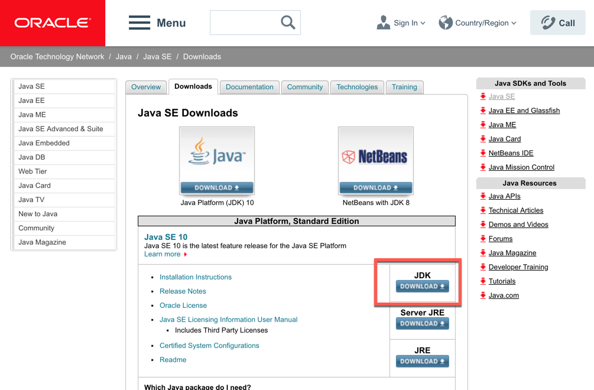
Android SDK Manager 根據官方建議使用 Android Studio 提供的 GUI 管理介面進行管理較方便。
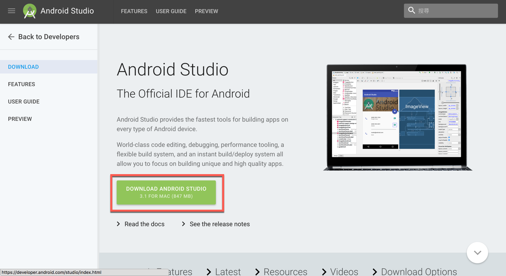
Android SDK Management
Cordova Android 的版本支援需要留意對應的 Android API-Level，而 Android API-Level 關係到行動裝置的版本是否支援。因此這部分在一開始需要確認專案支援的 Android 版本最低需求為何。Android SDK 的版本除非需要特定支援舊版的情況，一般來說只要裝最新版本即可，未來若有更新也可以將舊版的移除。
| cordova-android 版本 | 支援的 Android API-Levels | 相當於 Android 版本範圍 |
|---|---|---|
| 7.X.X | 19 - 27 | 4.4 - 8.0 |
| 6.X.X | 16 - 25 | 4.1 - 7.1.1 |
| 5.X.X | 14 - 23 | 4.0 - 6.0.1 |
| 4.1.X | 14 - 22 | 4.0 - 5.1 |
| 4.0.X | 10 - 22 | 2.3.3 - 5.1 |
| 3.7.X | 10 - 21 | 2.3.3 - 5.0.2 |
開啟 Android SDK Management 的方式：開啟 Android Studio 之後進入 Preferences 的視窗，System Settings 下有 Android SDK，點擊即可檢視 Android SDK Management 的介面。
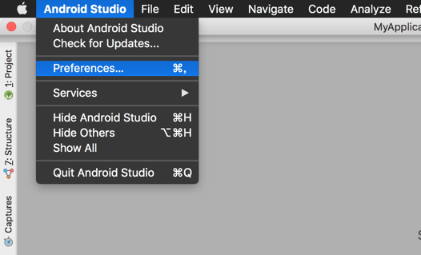
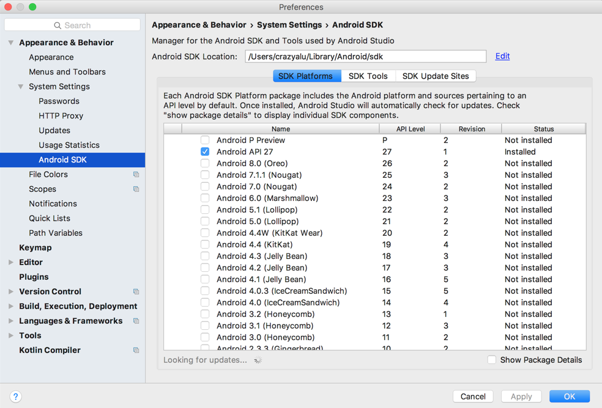
iOS 環境準備
Xcode
Xcode 有兩種安裝方式：
- App Store 搜尋 Xcode 進行安裝
- Apple Developer Downloads 下載安裝檔
Xcode 安裝完成之後，有一些指令列工具需要啟動提供給 Cordova 執行。在指令列工具下輸入：
$ xcode-select --install- 透過 yarn 安裝 - ```bash $ yarn global add ios-deploy1
2
3
4
5
6
7
8
9
10
11
- Deployment Tools
- [ios-deploy](https://www.npmjs.org/package/ios-deploy) 可以讓我們透過 command-line 將 iOS 應用程式更新到 iOS 裝置上。
- 安裝方式：
- 透過 npm 安裝
- ```bash
$ npm install ios-deploy -g1
2
3
4
5
6
7
8
9
-------
## 建立 Cordova 專案
環境都準備好之後，就正式來建立 Cordova 專案吧！透過 cordova cli 在指令列工具上輸入：
```bash
$ cordova create hello com.example.hello HelloWorld
create 是主要的指令，屬於全域型指令，hello 是資料夾的命名，也可以是路徑，若是路徑的話則要先手動建立資料夾。com.example.hello 是 App 的 ID，通常是以反向域名的方式命名，HelloWorld 則是 APP 的顯示名稱，在建立之後這些資訊都可以在 config.xml 中進行調整。建立後的資料夾架構如下圖：
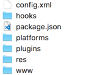
專案目錄架構
config.xml：整個專案最重要的檔案，主要記錄著 APP 相關的參數，例如：圖示、初始化圖片、名稱、開發團隊資訊、平台與套件相關資訊…等，這個檔案一定要加入版控！hooks：預設是空的，可針對專案需求製作掛鉤腳本以節省不必要的時間浪費。package.json：就是 npm 的 package.json，紀錄著套件或平台之間的版本相依性檔案。platforms：依照不同的平台會產生不同的資料夾，例如：android, ios…等。由於在編譯的過程中，會時常修改這裡面的檔案，因此不建議直接在這檔案中進行編輯，極有可能會被覆寫掉喔！plugins：存放加入的 cordova 套件，也不需要加入版控，config.xml 已經有紀錄囉。res：存放 APP Icon 與初始畫面圖片的地方，有很多不同的大小，這部分可參考文件與 SplashScreen 套件說明。www：Web 應用存放的地方，用 Angular 開發的話就是將ng build後的結果複製到這個資料夾中。
.gitignore 設定
Git 這麼好用的版控工具，沒用怎麼行呢？由於新增的時候沒有版控的設定，網路上有熱心的開發者提供現成的 gitignore 設定檔下載，基本上就是 platforms、plugins 這兩個資料夾中的檔案不需要加入版控即可。由於筆者的開發是搭配 Angular 進行，因此 www 資料夾也沒有加入版控，最後會再說明如何透過 Hooks 與 Angular CLI 的 ng build 搭配。
新增 Cordova 平台 ( Platform )
新增平台的方式很簡單，一樣透過 Cordova CLI 輸入以下的指令：
1 | $ cordova platform add android ios |
platform 專案型指令，主要與平台相關的操作，add 是加入指定的平台，Android 和 iOS 可以一起建立。
安裝 Cordova Plugins
專案開發的過程中多少都會需要存取原生的功能，這時候就要去尋找是否有符合需求的套件能使用，在架構介紹的時候有提到 Cordova 官方有持續在維護核心套件 ( Core Plugin )，大部分的需求都可透過這些套件實現，但有少部分的情況，我們可能需要尋找第三方套件來安裝，Cordova 發展時間已 6 年，因此不太需要擔心找不到適合的套件情況，僅留意套件之間是否有相依性的問題。
安裝 cordova plugin 指令：
1 | $ cordova plugin add cordova-plugin-xxx |
安裝完成之後，可以觀察一下 config.xml 檔案的變化，就可以了解主要的平台與套件的資訊皆紀錄在這個檔案中。
1 |
|
建置 Cordova 專案
建置專案的方式很簡單，首先將做好的 Web 專案整包複製到 www 資料夾下，然後輸入指令：
1 | $ cordova run android |
cordova run 的用途是直接建置完成後部署到模擬器或實體裝置上。 cordova build 則只有進行編譯，不會另外部署。兩者皆會產生 apk 檔案，除了對 android 進行建置之外，也可以一次建置多個平台，只需要將平台加在指令後即可：
1 | $ cordova run android ios |
建置完成之後 Android 平台會產生 APK 檔，路徑在：<your project name>/platforms/android/app/build/outputs/apk/debug，會看到名稱為 app-debug.apk 檔案，複製之後存到行動裝置中也以手動的方式進行安裝。從檔案名稱就可以知道這是在開發時期進行測試用的 apk 檔案。至於要如何建置正式發佈的版本，之後再紀錄分享。
iOS 建置
由於第一次開啟 Xcode 會有同意書需要先確認同意，若之前沒有開啟過 Xcode，請先開啟一次，才能確保專案建置與模擬器開啟順利。一樣透過 cordova run 建置與部署至實體裝置或模擬器，或是以 cordova build 建置產生 Xcode 的專案檔，檔案路徑如下：<your project name>/platforms/ios/ 資料夾中有名為 <AppName>.xcworkspace 的檔案，若要手動建置則直接開啟此檔，第一次建置完成開啟後會看到一些錯誤訊息，主要是簽證的部分，由於尚未設定，因此會出現錯誤的情況。
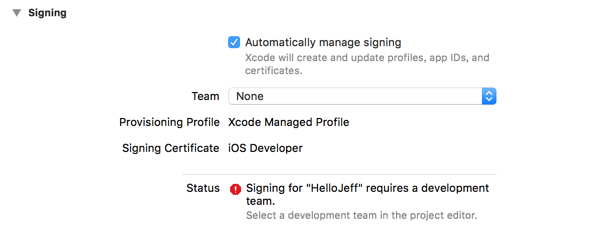
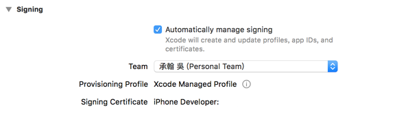
設定掛鉤 ( Hooks ) 搭配 Angular Build
由於我們使用 Angular 進行開發，因此在建置之前還需要經過 ng build 這段，並將 dist 資料架內容複製到 Cordova 專案目錄下的 www，當有新的變更要進行 cordova build 或 cordova run 時，都必須要『人肉 CI』一下，手動複製編譯後的內容，很沒效率，對於撰寫批次檔熟悉的開發者，就會自己寫個腳本來做這些事情，任何能透過指令解決的都可以寫成腳本，而 Cordova 也提供了方便好用的 Hooks 機制，可以設定在 config.xml 中：
1 | <hook src="hooks/buildApp.js" type="before_build" /> |
上面的意思就是，當 Cordova 要 build 或 run 之前，可以執行 buildApp.js 檔案，而這個檔案是使用 node.js 撰寫的腳本，主要做的事情就是回到 Angular 專案目錄下進行 ng build，完成後將 dist 的內容複製到 cordova 專案的 www 目錄下，如此一來就可以省下很多不必要的時間浪費囉！Working hard 之外，Working smart 也很重要呢！更多 Hooks 可參考官網文件
Debug
網站開發時我們都會透過 Chrome 的 F12 開發者工具進行除錯，到 App 上後，我們該如何除錯呢？很簡單，Chrome 針對 Android 平台提供了方便除錯的功能，一樣透過開發者工具，開啟 Remote Device：
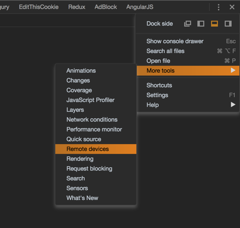
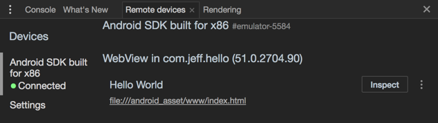
iOS APP 若要進行除錯的話，則需要透過 safari，首先進入 safari 的偏好設定：
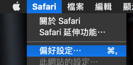
接著到進階的分頁下，有個在選單列中顯示『開發』選單的選項，勾選起來：
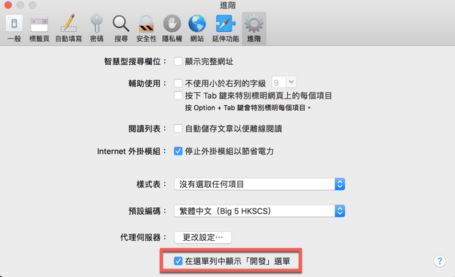
回到 Safari，就會看到開發的選單項目，裡面會看到如下圖的內容，其中『Jeff-Macbook』是筆者的電腦，若有接上其他 iOS 裝置或模擬器則會顯示在這個選單中，展開會就可查看『可檢閱的應用程式』，也就能進行除錯囉！
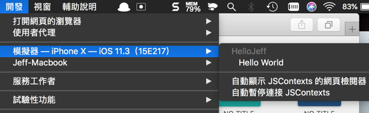
小結
透過以上的介紹，可以了解如何準備環境與安裝 Cordova CLI，透過指令 cordova create 新增專案並使用 cordova platform add 加入支援的平台與套件，最後利用 Cordova hooks 搭配 Angular CLI 將建置後的內容與複製到 www 資料夾進行 Cordova 建置。利用 cordova run android 或 cordova build android 進行 APP 建置，iOS 第一次建置完成後透過 Xcode 開啟 xcworkspace 檔案需要選擇團隊以建立 APP Provision，在開發的過程中可利用 Chrome 瀏覽器的 F12 開發者工具進行 Android APP 的偵錯，透過 Safari 瀏覽器提供的開發者工具針對 iOS APP 除錯。
參考資料：